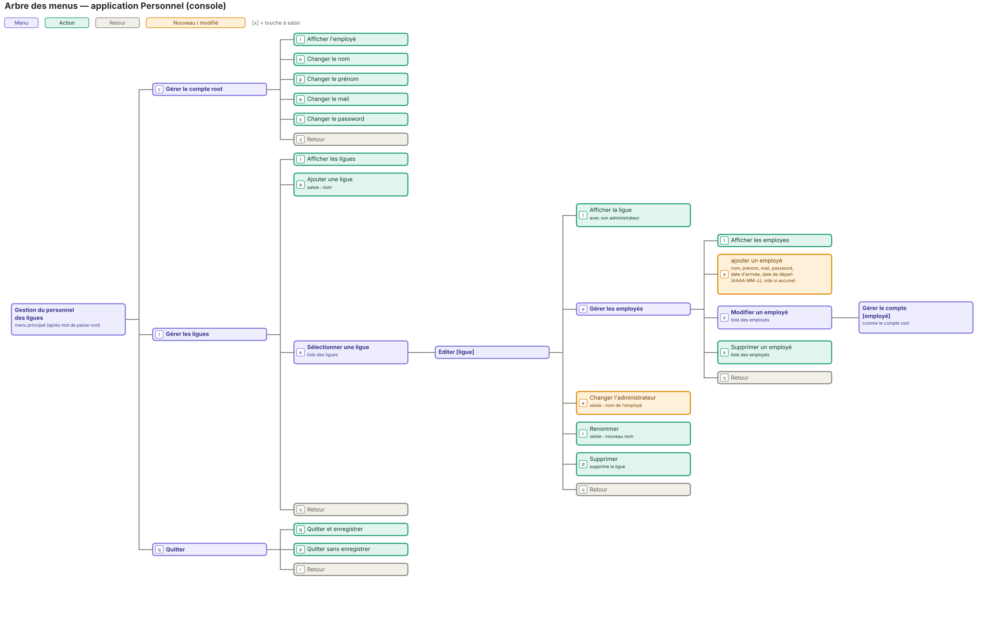
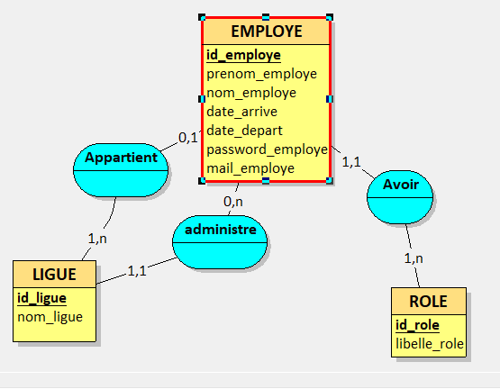

Application Personnel
Projet de BTS SIO SLAM | Java | [2026-2027]
Application de gestion des employés des ligues de la Maison des ligues (M2L), à l'origine en ligne de commande et mono-utilisateur. Le projet consiste à la rendre multi-utilisateurs grâce à une base de données et à mettre en place trois niveaux d'habilitation, tout en conservant son architecture 3-tiers.
Ressources fournies
- Le code source de l'application, configuré pour Eclipse
- La documentation du code (Javadoc)
- Une bibliothèque de dialogue en ligne de commande
Travail demandé
- Rendre l'application multi-utilisateurs grâce à une base de données
- Mettre en place trois niveaux d'habilitation : employé (consultation seule), administrateur de ligue (gestion des employés de sa ligue), super-administrateur (gestion de tous les employés et des comptes administrateurs)
- Conserver l'architecture 3-tiers de l'application
Ce que j'ai réalisé
[Iteration 1]
- [Representation graphique des menus qui s'affiche en ligne de commandes]
- [Création d'un MCD qui répresente la base de données]
- [Ajout des dates d'arrivées pour les employé (Ajout des constructeur, getteur, setter)]
[Iteration 2]
- [Script de création de tables]
- [Sélection des employés]
- [Changement administrateur en ligne de commande]
- [Saisie des dates en ligne de commande]
Technologies utilisées
- Java
- Eclipse
- Looping
- Github Desktop
Arbre Heurestique

Modèle conceptuel de données
